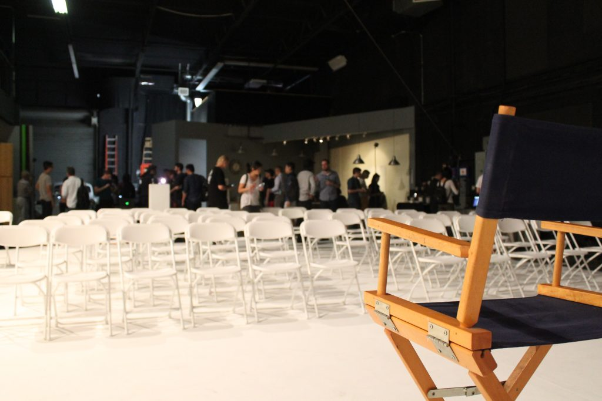
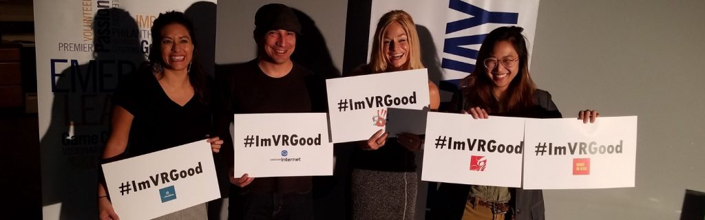
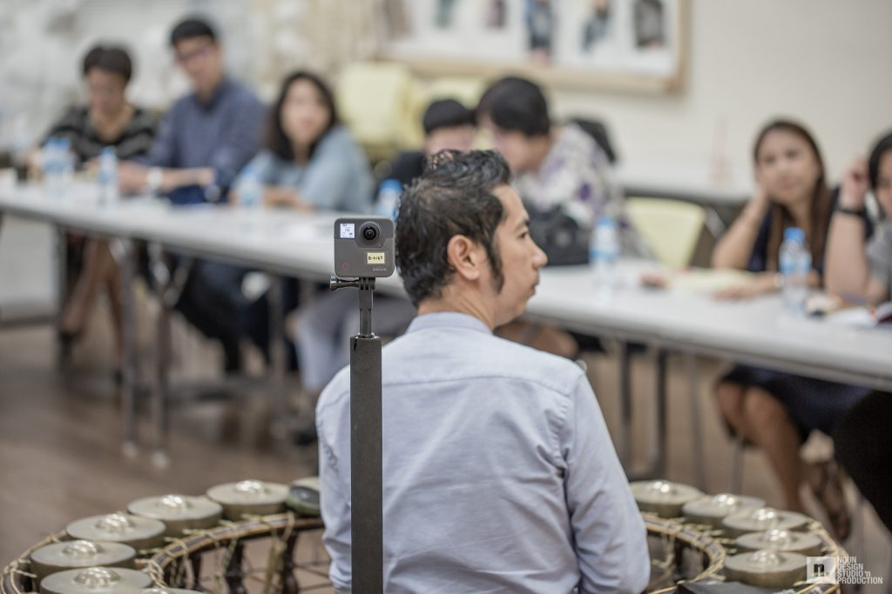
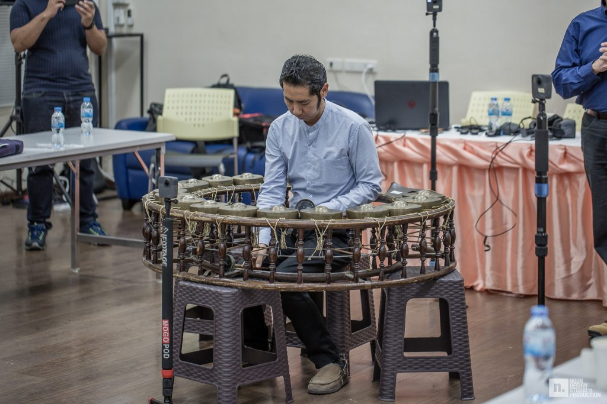
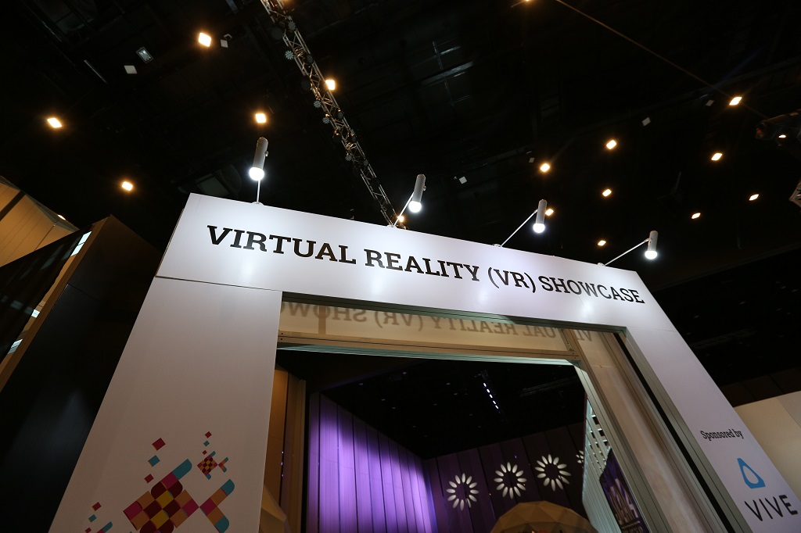
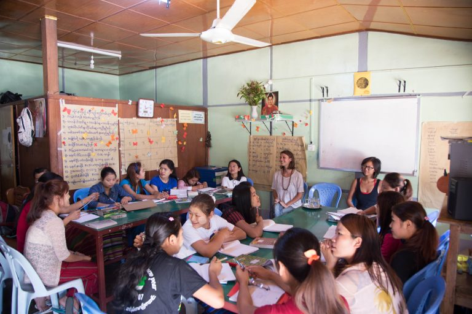
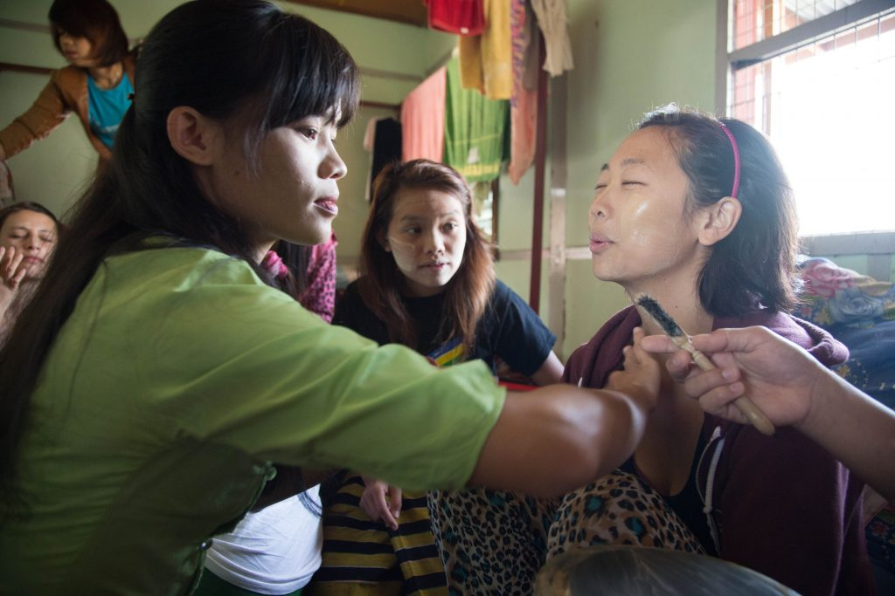
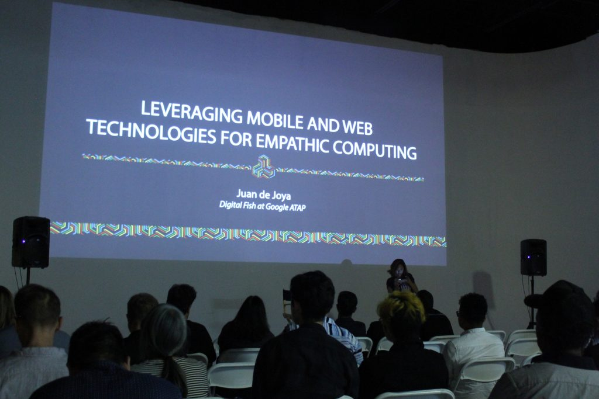
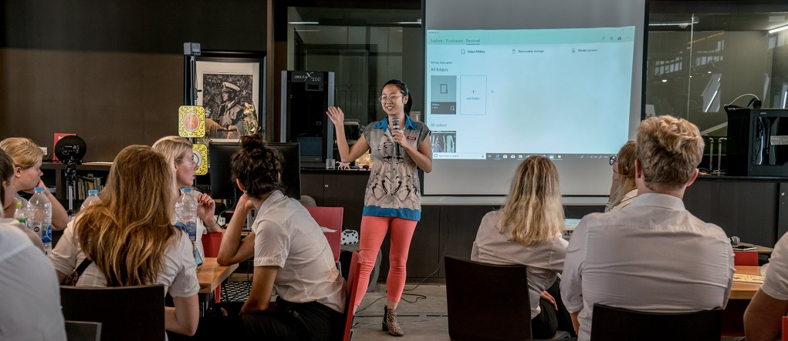

Made In Asia Creative Tech Lab
On pause: to rest and reflect
A space and consultancy where ASEAN artists, designers, and technologists collaborate with local communities. I partnered with different creative spaces in Los Angeles, SF Bay Area, and Bangkok to host play parties for creative technologists around Southeast Asia and China. They became a breeding ground for cross cultural collaboration between creators and audiences all over the world.
Over the course of 2 years, we held workshops that introduced schools to VR as a tool for creativity, talks about emerging media, and consultations for companies and organizations who wanted their own artist led tech programming.
My goal was to create wider channels of bi-directional culture flow. When I first started the initiative in 2017, virtual and augmented reality were still relatively young and it was difficult to find the equipment needed to prototype games, experiences, and films. Made In Asia was a step towards equitable distribution of emerging tech, while creating a stage for media artists interested in themes like art, tech, and society.

360 filmmaking workshop at Chulalongkorn University
Dept of Music and Fine Arts
VR Committee at Siggraph Asia
Internet Literacy Workshop in LashioThe Thanakha Treatment
 Alt Visions Workshop, we taught kids about the everyday capabilities of AI, 3D printing, and AR, and asked them to reimagine their neighborhood in 50 years
Alt Visions Workshop, we taught kids about the everyday capabilities of AI, 3D printing, and AR, and asked them to reimagine their neighborhood in 50 years
 We brought their visions to life in AR. Model made by collaborator and XR Artist, Sue Yama
We brought their visions to life in AR. Model made by collaborator and XR Artist, Sue Yama
 Panel on VR Storytelling at Goethe's Unfolding Kafka Festival 2019
Panel on VR Storytelling at Goethe's Unfolding Kafka Festival 2019
MIA talk at the Creative Technology Center in the Brewery Arts Complex
AR Arts talk with Stenden University